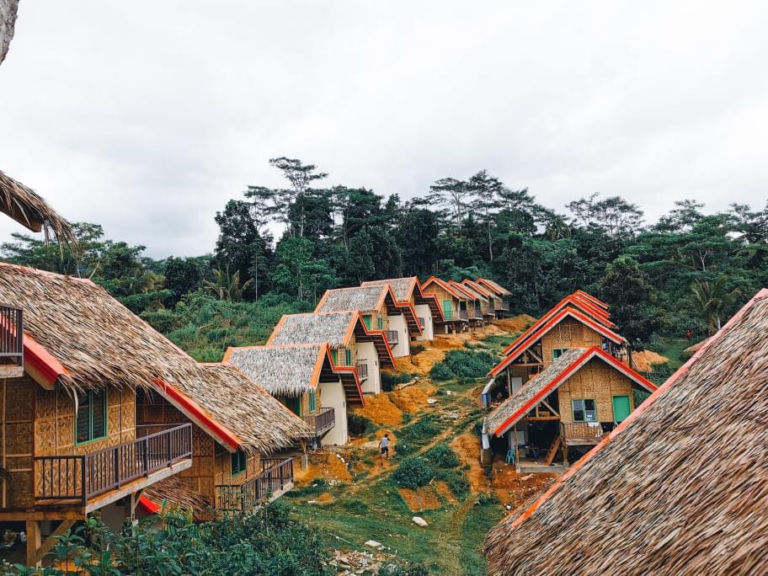
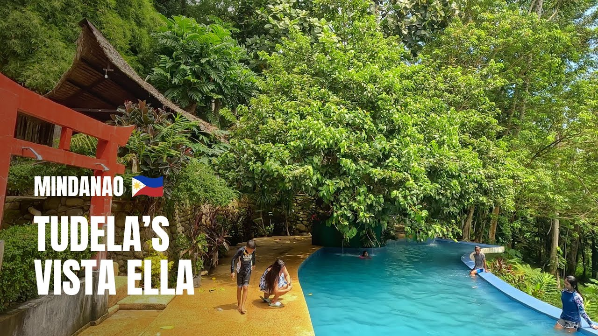
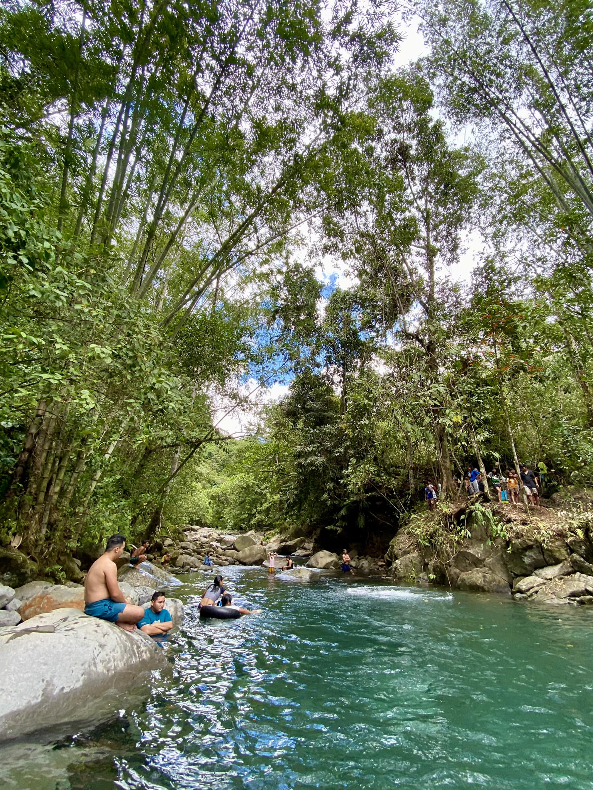

Popular Attractions

1. Subanen Village
The Subanen Village in Tudela, Misamis Occidental, is a cultural heritage site and eco-tourism destination that showcases the rich traditions and way of life of the Subanen people.

2. Vista Ella
Mines View Park offers panoramic views of the surrounding mountains and valleys. You can enjoy shopping for local souvenirs and take pictures in traditional Cordilleran attire.

3. Tonggo River
The Tonggo River is a picturesque waterway known for its clear waters and lush greenery, making it a favored spot for both locals and tourists seeking a natural retreat.

4. Blue Lagoon
The Blue Lagoon, also known as the Crystal Blue Lagoon, is a hidden gem celebrated for its clear waters and serene environment, making it ideal for visitors seeking tranquility.